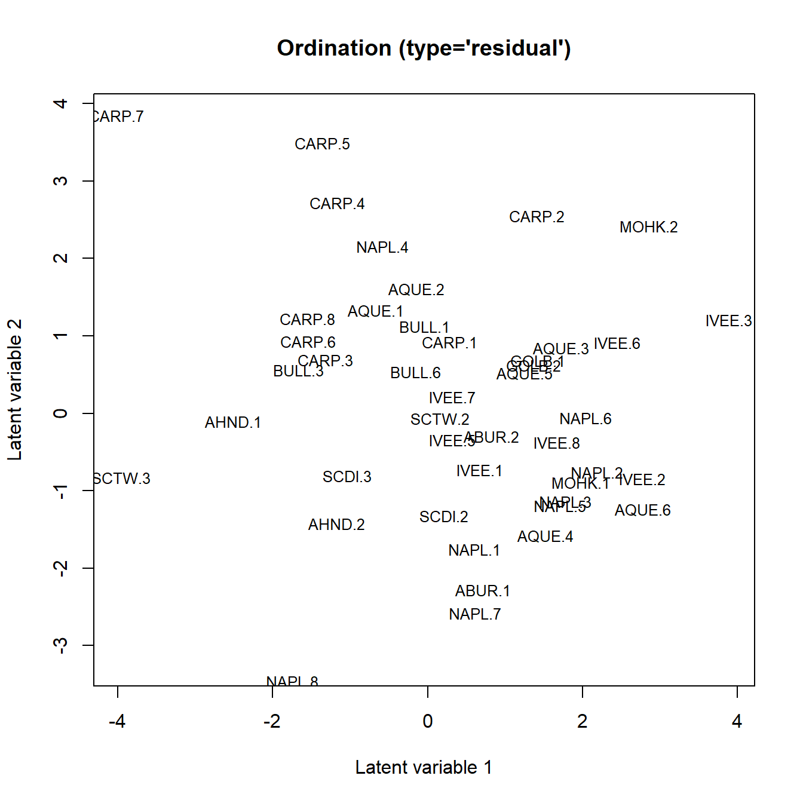
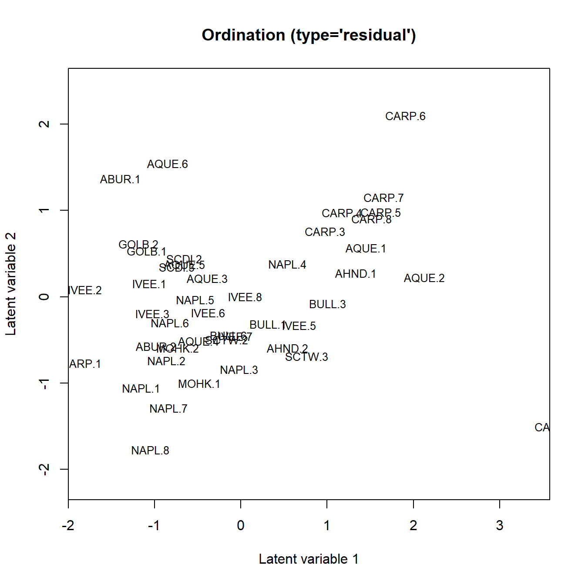

vignettes/vignette8.Rmd
vignette8.RmdThis short document showcases how to use the gllvm package to analyse multivariate percent cover data. Namely, we show how to apply the hurdle beta GLLVM (with logistic link), as detailed in Korhonen et al. (2024), to analyse the kelp forest dataset from the Santa Barbara Coastal Long-Term Ecological Research project, available from https://doi.org/10.6073/pasta/0af1a5b0d9dde5b4e5915c0012ccf99c.
A multivariate percent cover dataset often comes in the form of a matrix $\bf{Y}$, with being the number of observational units/sites, and being the number of species of plants, macroalgae, sessile invertebrates, et cetera. The response is then the recorded percentage of the relative area covered by species on unit/site . Typically such datasets contain considerable proportion of zero observations, as a given obs. unit is often populated by only a small subset of the species in total. More rarely, it might even be the case that one of the species covers some obs. unit completely.
Traditionally, beta regression has been used to model responses that take the form of percentages. If is in the (open) interval , and is distributed according to beta distribution, , then it has the following density:
The mean parameter can be connected to a set of covariates and latent variables through some link function, by the equation $g(\mu_{ij})=\eta_{ij} = \beta_{0j} + \boldsymbol{\beta}_j^\top\bf{x_i} + \boldsymbol{\lambda}_j^\top\bf{u_i}$.
However, such a model is ill-suited for most percent cover datasets, due to the fact that the beta distribution isn’t capable of handling zero (or ) responses. To make use of the beta regression model in such scenario, one needs to use some transformation in order to ‘push’ the responses away from the boundaries. This procedure might provide reasonable results when the numbers of zeros or ones in the data are relatively low. On the other hand, by transforming the zeros and ones, we might lose some important information.
A more sophisticated way of tackling such issue is by considering a zero-accommodating model, couple of which have been proposed recently. One such model is the hurdle beta model, which models the two (can be extended to three if covers are recorded, see Korhonen et al. (2024)) classes the response can take, i.e., and , by separate processes. Namely, the zeros are assumed to be generated by a Bernoulli process. Conditional on , the response is modeled using the standard beta distribution as presented above. The likelihood function for a response following the hurdle beta distribution is of the form: where $g(\mu_{ij}^0) = \eta_{ij}^0 = \beta_{0j}^0 + \bf{x_i}^\top\boldsymbol{\beta}_j^0 + \bf{u_i}^\top\boldsymbol{\lambda}_j^0$ for and $g(\mu_{ij}) = \eta_{ij} = \beta_{0j} + \bf{x_i}^\top\boldsymbol{\beta}_j + \bf{u_i}^\top\boldsymbol{\lambda}_j$ and can be either probit or logistic link function. Note, that here, the separate linear predictors share the same environmental covariates $\bf{x}_i$ and latent variable scores $\bf{u}_i$, while the coefficients and loadings are allowed to differ.
The gllvm package implements the hurdle beta GLLVM
with two different estimation methods available. First, accessed by the
argument method="VA" when calling uses a hybrid approach,
where the method of variational approximations, or VA, is applied to the
Bernoulli-process part of the data (only probit link allowed), while the
method of extended variational approximations, see
Korhonen et al. (2023), is applied to the
beta distributed part. By instead specifying method="EVA",
the EVA method is applied to both parts of the
likelihood.
In the following, we show how to fit the logistic hurdle beta GLLVM using EVA on the SBC LTER marine macroalgae (i.e., seaweed) percent cover dataset. The data has been collected in 2000-2020 along 44 permanent transect lines along coastal southern California. We will specify a model with two latent variables (for ordination) and will include the rockiness of the seabed and the average number of stripes of giant kelp as environmental covariates in the model.
## Loading required package: TMB##
## Attaching package: 'gllvm'## The following object is masked from 'package:stats':
##
## simulate
data("kelpforest")
Yabund <- kelpforest$Y
Xenv <- kelpforest$X
SPinfo <- kelpforest$SPinfo
# Data contains both algae and sessile invertebrates
table(SPinfo$GROUP)##
## ALGAE INVERT PLANT
## 61 69 2
# Select only the macroalgae:
Yalg <- Yabund[,SPinfo$GROUP=="ALGAE"]
# To demonstrate the models, use only the data from the year 2016:
Yalg <- Yalg[Xenv$YEAR==2016,]
Xenv <- Xenv[Xenv$YEAR==2016,]
# Remove species which have no observations or just one
Yalg <- Yalg[,-which(colSums(Yalg>0)<2)]
# Number of obs. and species:
dim(Yalg)## [1] 44 42
# Specify the covariates in the linear predictor
Xformulai = ~KELP_FRONDS + PERCENT_ROCKYAfter setting up the data, LV design and the covariates, the model is estimated by
fit <- gllvm(Yalg, X=Xenv, formula = Xformulai, family = "betaH", method="EVA",
num.lv = 2, link="logit", control=list(reltol=1e-12))To inspect e.g., the covariate effects, use
fit$params$Xcoef## KELP_FRONDS PERCENT_ROCKY
## AU -4.307914e-02 -4.770042e-03
## BF -1.853324e+00 7.845708e-02
## BO 3.385302e-01 -6.147463e-02
## BR -6.183200e-02 2.733598e-02
## BRA 3.260636e-01 -8.164720e-02
## CAL -1.385751e-01 -2.664296e-02
## CC 9.511590e-02 -1.284133e-03
## CF -1.328734e-01 9.125119e-03
## CG 3.078440e-02 -3.648815e-02
## CO -9.359905e-02 1.268354e-02
## COF -1.011786e-02 7.601417e-04
## CP 2.168726e-02 -7.012546e-02
## CRYP 5.176407e-05 -9.012539e-07
## CYOS 3.569089e-02 -7.728223e-03
## DL 1.015238e-02 1.974069e-02
## DMH 2.028236e-01 8.550216e-03
## DP -7.015430e-02 7.813939e-03
## DU -6.720121e-01 -5.758309e-02
## EAH 4.407580e+00 -6.136458e-02
## EC 7.161877e-02 1.579956e-02
## EH 6.005642e-01 -1.139467e-01
## ER -6.355586e-02 -2.330824e-02
## FB 6.810655e-02 3.410612e-02
## FTHR -2.401967e-02 -1.913079e-02
## GR 3.016769e-01 -1.434593e-02
## GS -2.410029e-01 -1.079593e-02
## GYSP -1.380775e-01 3.815308e-03
## MH 8.944465e-02 -1.296316e-03
## NIE -1.928211e-02 -6.757693e-03
## PH 1.408930e+00 -2.027203e-01
## PHSE -3.057175e-01 5.667093e-03
## PL 1.329472e-01 -5.961618e-04
## POLA -3.064896e-02 -3.633384e-02
## PRSP 1.027000e-05 -1.797908e-07
## R 9.964480e-02 5.434407e-03
## RAT 1.511523e-02 1.733764e-03
## SAFU -1.899770e+00 1.291657e-02
## SAHO 5.056012e-01 -2.444927e-02
## SAMU -1.390003e-01 -4.124579e-03
## SCCA -4.487021e-02 5.600061e-02
## TALE 6.318130e-02 -2.708912e-02
## UV -8.435144e-01 -4.078454e-02
## H01_AU -3.748890e-01 -5.090408e-02
## H01_BF -1.866961e-01 -7.874489e-02
## H01_BO 2.899801e-01 -2.869145e-02
## H01_BR -9.661864e-02 -4.595573e-03
## H01_BRA 1.603470e-02 -4.446664e-02
## H01_CAL -2.177546e-01 1.126573e-01
## H01_CC -1.822890e-01 5.703762e-03
## H01_CF -4.843186e-02 -1.332073e-02
## H01_CG 8.040600e-02 2.046815e-01
## H01_CO 3.978075e-02 -1.539441e-02
## H01_COF -2.497741e+00 2.305096e-01
## H01_CP -8.467667e-02 1.275048e-01
## H01_CRYP -3.409764e-02 -7.639185e-02
## H01_CYOS 1.091321e-01 -1.693727e-02
## H01_DL -2.191145e-02 -2.713931e-02
## H01_DMH -1.525665e-01 -1.979245e-02
## H01_DP -8.902506e-02 1.617001e-02
## H01_DU -4.162051e-01 2.109371e-01
## H01_EAH -7.180904e+00 1.875275e-01
## H01_EC 4.734169e-01 1.351968e-01
## H01_EH 1.692431e-01 -4.020182e-02
## H01_ER -3.849820e-02 4.543815e-02
## H01_FB -6.363853e-01 -2.517973e-02
## H01_FTHR -4.713358e-01 -4.440901e-02
## H01_GR -1.897726e-01 2.503153e-01
## H01_GS -6.117867e-01 -2.390469e-01
## H01_GYSP -3.032503e-02 1.165265e-02
## H01_MH 7.628570e+00 -4.105026e-02
## H01_NIE 3.543694e-01 -7.125865e-02
## H01_PH 4.427246e-01 -8.603485e-02
## H01_PHSE -2.351648e-01 -5.932135e-02
## H01_PL -1.886402e-02 2.216514e-03
## H01_POLA -1.500098e-01 -2.585375e-02
## H01_PRSP -6.698110e-02 -1.248328e-02
## H01_R -1.302328e-01 1.389499e-02
## H01_RAT -1.119953e-01 2.415576e-02
## H01_SAFU -3.568917e+00 -1.324343e-01
## H01_SAHO -2.594287e+00 1.884425e-01
## H01_SAMU -7.460319e-02 -1.506395e-03
## H01_SCCA -9.201648e-02 1.441938e-02
## H01_TALE -5.933011e-01 2.266302e-01
## H01_UV -7.410063e-01 -1.454605e-02In the above, the prefix indicates that the coefficient relates to the Bernoulli part of the hurdle model.
Ordination plot can then be generated as per usual:
ordiplot(fit, jitter = TRUE, s.cex = .8)
Another solution for modeling percentage cover data in gllvm is to use ordered beta response model. It handles zeros and ones slightly differently compared to hurdle beta model. Instead of assuming that the zeros and ones comes from separate process from the percent cover, the model assumes that there is an underlying process where all observations comes from.
For species , let denote an underlying continuous variable, and define two cutoff parameters such that occurs when , occurs when , and occurs when . Conditional on , the response variable follows a beta distribution. By assuming follows a logistic distribution, then marginalising over we obtain the following distribution for the percent cover responses that characterizes the ordered beta GLLVM,
Lets demonstrate the ordered beta response model for the previous example. As the data has no ones:
sum(Yalg ==1)## [1] 0We can accommodate the model to better handle data that by fixing the
upper cutoff parameters to some large value, for example 20. With
gllvm this can be done by setting starting values for the
cutoff parameter, ´zetacutoff = c(0, 20)´ and fixing the upper cutoff
parameters with ´setMap = list(zeta = factor(c(1:m, rep(NA, m))))´. We
assume that the number of species/response variables in the data is
saved to object m. There are ´m´ (number of species) lower
cutoff parameters
we let be freely estimated (that’s indexes ´1:m´ in ´setMap´) and ´m´
upper cutoff parameters
that we fix (that’s ´rep(NA, m)´ in ´setMap´).
Some species are observed only a few times:
colSums(Yalg>0)## AU BF BO BR BRA CAL CC CF CG CO COF CP CRYP CYOS DL DMH
## 23 3 11 5 2 5 30 13 5 24 5 3 3 33 26 8
## DP DU EAH EC EH ER FB FTHR GR GS GYSP MH NIE PH PHSE PL
## 14 4 3 36 2 6 6 6 11 20 7 36 13 2 5 4
## POLA PRSP R RAT SAFU SAHO SAMU SCCA TALE UV
## 6 4 31 17 6 2 7 7 5 6so there is not much information to estimate the shape parameter of the beta distribution for each species separately. Thus we can also set the shape parameter to be common across species with ´disp.formula = rep(1, m)´. This can be applied for all beta based models in gllvm.
Now we are ready to fit the model, we use probit-link function here but logit is also possible similarly to beta hurdle model:
# save the number of species to object m
m <- ncol(Yalg)
fit_ob <- gllvm(Yalg, X=Xenv, formula = Xformulai, family = "orderedBeta",
method="EVA", num.lv = 2, link="probit",
disp.formula = rep(1, m), zetacutoff = c(0, 20),
setMap = list(zeta = factor(c(1:m, rep(NA, m)))))
fit_ob## Call:
## gllvm(y = Yalg, X = Xenv, formula = Xformulai, family = "orderedBeta",
## num.lv = 2, method = "EVA", link = "probit", disp.formula = rep(1,
## m), setMap = list(zeta = factor(c(1:m, rep(NA, m)))),
## zetacutoff = c(0, 20))
## family:
## [1] "orderedBeta"
## method:
## [1] "EVA"
##
## log-likelihood: 265.8511
## Residual degrees of freedom: 1554
## AIC: 56.29774
## AICc: 167.9912
## BIC: 1679.724Now if we check the cutoff values we see that the upper bounds are fixed to 20
fit_ob$params$zeta## cutoff0 cutoff1
## [1,] -2.2804694 20
## [2,] -1.2916900 20
## [3,] -2.7331047 20
## [4,] -1.5286385 20
## [5,] -1.5029773 20
## [6,] -2.1640885 20
## [7,] -5.4648841 20
## [8,] -3.0017473 20
## [9,] -3.6935325 20
## [10,] -3.4401731 20
## [11,] -5.3251816 20
## [12,] -3.3384571 20
## [13,] -1.5552542 20
## [14,] -3.6606665 20
## [15,] -3.4961040 20
## [16,] -2.4117584 20
## [17,] -2.3677207 20
## [18,] -2.3543442 20
## [19,] -5.6424235 20
## [20,] -4.2557158 20
## [21,] -2.8684617 20
## [22,] -2.7467919 20
## [23,] -0.8132517 20
## [24,] -2.3837258 20
## [25,] -4.5109361 20
## [26,] -3.5332852 20
## [27,] -2.0539203 20
## [28,] -4.3952734 20
## [29,] -3.1997388 20
## [30,] -1.5218883 20
## [31,] -2.3919245 20
## [32,] -1.7326184 20
## [33,] -2.2156611 20
## [34,] -2.1988386 20
## [35,] -4.8337851 20
## [36,] -3.3171903 20
## [37,] -4.6105558 20
## [38,] -8.5070934 20
## [39,] -1.6002892 20
## [40,] -2.3137990 20
## [41,] -3.0606793 20
## [42,] -1.6685450 20Ordination plot:
ordiplot(fit_ob, jitter = TRUE, s.cex = .8)